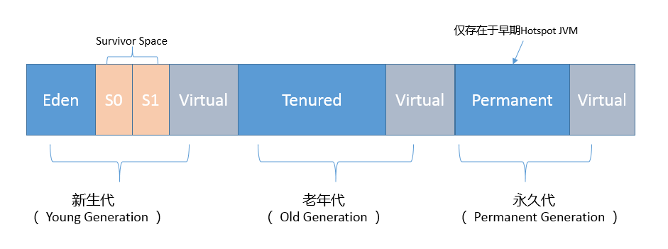
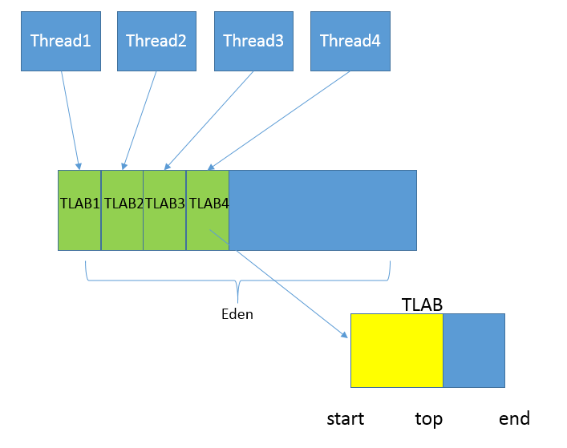
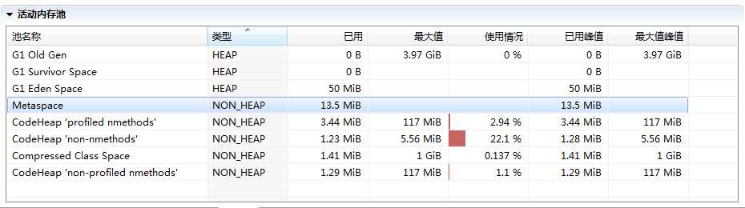
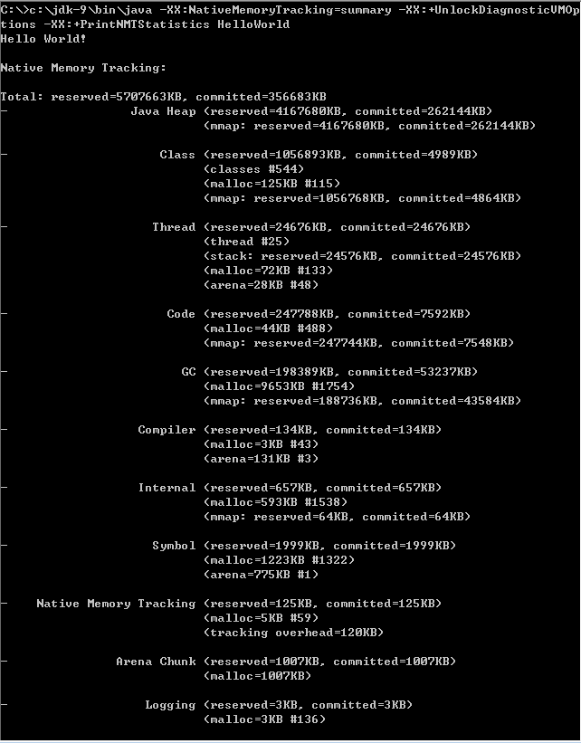
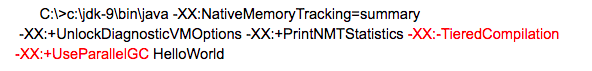
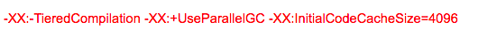
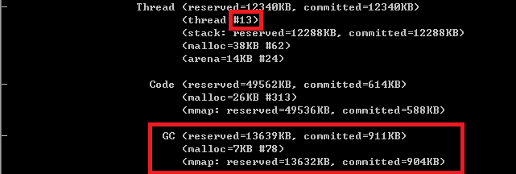

- 00 开篇词 以面试题为切入点，有效提升你的Java内功.md
- 01 谈谈你对Java平台的理解？.md
- 02 Exception和Error有什么区别？.md
- 03 谈谈final、finally、 finalize有什么不同？.md
- 04 强引用、软引用、弱引用、幻象引用有什么区别？.md
- 05 String、StringBuffer、StringBuilder有什么区别？.md
- 06 动态代理是基于什么原理？.md
- 07 int和Integer有什么区别？.md
- 08 对比Vector、ArrayList、LinkedList有何区别？.md
- 09 对比Hashtable、HashMap、TreeMap有什么不同？.md
- 10 如何保证集合是线程安全的_ ConcurrentHashMap如何实现高效地线程安全？.md
- 11 Java提供了哪些IO方式？ NIO如何实现多路复用？.md
- 12 Java有几种文件拷贝方式？哪一种最高效？.md
- 13 谈谈接口和抽象类有什么区别？.md
- 14 谈谈你知道的设计模式？.md
- 15 synchronized和ReentrantLock有什么区别呢？.md
- 16 synchronized底层如何实现？什么是锁的升级、降级？.md
- 17 一个线程两次调用start()方法会出现什么情况？.md
- 18 什么情况下Java程序会产生死锁？如何定位、修复？.md
- 19 Java并发包提供了哪些并发工具类？.md
- 20 并发包中的ConcurrentLinkedQueue和LinkedBlockingQueue有什么区别？.md
- 21 Java并发类库提供的线程池有哪几种？ 分别有什么特点？.md
- 22 AtomicInteger底层实现原理是什么？如何在自己的产品代码中应用CAS操作？.md
- 23 请介绍类加载过程，什么是双亲委派模型？.md
- 24 有哪些方法可以在运行时动态生成一个Java类？.md
- 25 谈谈JVM内存区域的划分，哪些区域可能发生OutOfMemoryError_.md
- 26 如何监控和诊断JVM堆内和堆外内存使用？.md
- 27 Java常见的垃圾收集器有哪些？.md
- 28 谈谈你的GC调优思路_.md
- 29 Java内存模型中的happen-before是什么？.md
- 30 Java程序运行在Docker等容器环境有哪些新问题？.md
- 31 你了解Java应用开发中的注入攻击吗？.md
- 32 如何写出安全的Java代码？.md
- 33 后台服务出现明显“变慢”，谈谈你的诊断思路？.md
- 34 有人说“Lambda能让Java程序慢30倍”，你怎么看？.md
- 35 JVM优化Java代码时都做了什么？.md
- 36 谈谈MySQL支持的事务隔离级别，以及悲观锁和乐观锁的原理和应用场景？.md
- 37 谈谈Spring Bean的生命周期和作用域？.md
- 38 对比Java标准NIO类库，你知道Netty是如何实现更高性能的吗？.md
- 39 谈谈常用的分布式ID的设计方案？Snowflake是否受冬令时切换影响？.md
- 周末福利 谈谈我对Java学习和面试的看法.md
- 结束语 技术没有终点.md
26 如何监控和诊断JVM堆内和堆外内存使用？
上一讲我介绍了JVM内存区域的划分，总结了相关的一些概念，今天我将结合JVM参数、工具等方面，进一步分析JVM内存结构，包括外部资料相对较少的堆外部分。
今天我要问你的问题是，如何监控和诊断JVM堆内和堆外内存使用？
典型回答
了解JVM内存的方法有很多，具体能力范围也有区别，简单总结如下：
- 可以使用综合性的图形化工具，如JConsole、VisualVM（注意，从Oracle JDK 9开始，VisualVM已经不再包含在JDK安装包中）等。这些工具具体使用起来相对比较直观，直接连接到Java进程，然后就可以在图形化界面里掌握内存使用情况。
以JConsole为例，其内存页面可以显示常见的堆内存和各种堆外部分使用状态。
-
也可以使用命令行工具进行运行时查询，如jstat和jmap等工具都提供了一些选项，可以查看堆、方法区等使用数据。
-
或者，也可以使用jmap等提供的命令，生成堆转储（Heap Dump）文件，然后利用jhat或Eclipse MAT等堆转储分析工具进行详细分析。
-
如果你使用的是Tomcat、Weblogic等Java EE服务器，这些服务器同样提供了内存管理相关的功能。
-
另外，从某种程度上来说，GC日志等输出，同样包含着丰富的信息。
这里有一个相对特殊的部分，就是是堆外内存中的直接内存，前面的工具基本不适用，可以使用JDK自带的Native Memory Tracking（NMT）特性，它会从JVM本地内存分配的角度进行解读。
考点分析
今天选取的问题是Java内存管理相关的基础实践，对于普通的内存问题，掌握上面我给出的典型工具和方法就足够了。这个问题也可以理解为考察两个基本方面能力，第一，你是否真的理解了JVM的内部结构；第二，具体到特定内存区域，应该使用什么工具或者特性去定位，可以用什么参数调整。
对于JConsole等工具的使用细节，我在专栏里不再赘述，如果你还没有接触过，你可以参考JConsole官方教程。我这里特别推荐Java Mission Control（JMC），这是一个非常强大的工具，不仅仅能够使用JMX进行普通的管理、监控任务，还可以配合Java Flight Recorder（JFR）技术，以非常低的开销，收集和分析JVM底层的Profiling和事件等信息。目前， Oracle已经将其开源，如果你有兴趣请可以查看OpenJDK的Mission Control项目。
关于内存监控与诊断，我会在知识扩展部分结合JVM参数和特性，尽量从庞杂的概念和JVM参数选项中，梳理出相对清晰的框架：
-
细化对各部分内存区域的理解，堆内结构是怎样的？如何通过参数调整？
-
堆外内存到底包括哪些部分？具体大小受哪些因素影响？
知识扩展
今天的分析，我会结合相关JVM参数和工具，进行对比以加深你对内存区域更细粒度的理解。
首先，堆内部是什么结构？
对于堆内存，我在上一讲介绍了最常见的新生代和老年代的划分，其内部结构随着JVM的发展和新GC方式的引入，可以有不同角度的理解，下图就是年代视角的堆结构示意图。- 
你可以看到，按照通常的GC年代方式划分，Java堆内分为：
- 新生代
新生代是大部分对象创建和销毁的区域，在通常的Java应用中，绝大部分对象生命周期都是很短暂的。其内部又分为Eden区域，作为对象初始分配的区域；两个Survivor，有时候也叫from、to区域，被用来放置从Minor GC中保留下来的对象。
-
JVM会随意选取一个Survivor区域作为“to”，然后会在GC过程中进行区域间拷贝，也就是将Eden中存活下来的对象和from区域的对象，拷贝到这个“to”区域。这种设计主要是为了防止内存的碎片化，并进一步清理无用对象。
-
从内存模型而不是垃圾收集的角度，对Eden区域继续进行划分，Hotspot JVM还有一个概念叫做Thread Local Allocation Buffer（TLAB），据我所知所有OpenJDK衍生出来的JVM都提供了TLAB的设计。这是JVM为每个线程分配的一个私有缓存区域，否则，多线程同时分配内存时，为避免操作同一地址，可能需要使用加锁等机制，进而影响分配速度，你可以参考下面的示意图。从图中可以看出，TLAB仍然在堆上，它是分配在Eden区域内的。其内部结构比较直观易懂，start、end就是起始地址，top（指针）则表示已经分配到哪里了。所以我们分配新对象，JVM就会移动top，当top和end相遇时，即表示该缓存已满，JVM会试图再从Eden里分配一块儿。- 
- 老年代
放置长生命周期的对象，通常都是从Survivor区域拷贝过来的对象。当然，也有特殊情况，我们知道普通的对象会被分配在TLAB上；如果对象较大，JVM会试图直接分配在Eden其他位置上；如果对象太大，完全无法在新生代找到足够长的连续空闲空间，JVM就会直接分配到老年代。
- 永久代
这部分就是早期Hotspot JVM的方法区实现方式了，储存Java类元数据、常量池、Intern字符串缓存，在JDK 8之后就不存在永久代这块儿了。
那么，我们如何利用JVM参数，直接影响堆和内部区域的大小呢？我来简单总结一下：
-
最大堆体积
-Xmx value
-
初始的最小堆体积
-Xms value
-
老年代和新生代的比例
-XX:NewRatio=value
默认情况下，这个数值是2，意味着老年代是新生代的2倍大；换句话说，新生代是堆大小的1/3。
-
当然，也可以不用比例的方式调整新生代的大小，直接指定下面的参数，设定具体的内存大小数值。
-XX:NewSize=value
-
Eden和Survivor的大小是按照比例设置的，如果SurvivorRatio是8，那么Survivor区域就是Eden的1/8大小，也就是新生代的1/10，因为YoungGen=Eden + 2*Survivor，JVM参数格式是
-XX:SurvivorRatio=value
-
TLAB当然也可以调整，JVM实现了复杂的适应策略，如果你有兴趣可以参考这篇说明。
不知道你有没有注意到，我在年代视角的堆结构示意图也就是第一张图中，还标记出了Virtual区域，这是块儿什么区域呢？
在JVM内部，如果Xms小于Xmx，堆的大小并不会直接扩展到其上限，也就是说保留的空间（reserved）大于实际能够使用的空间（committed）。当内存需求不断增长的时候，JVM会逐渐扩展新生代等区域的大小，所以Virtual区域代表的就是暂时不可用（uncommitted）的空间。
第二，分析完堆内空间，我们一起来看看JVM堆外内存到底包括什么？
在JMC或JConsole的内存管理界面，会统计部分非堆内存，但提供的信息相对有限，下图就是JMC活动内存池的截图。- 
接下来我会依赖NMT特性对JVM进行分析，它所提供的详细分类信息，非常有助于理解JVM内部实现。
首先来做些准备工作，开启NMT并选择summary模式，
-XX:NativeMemoryTracking=summary
为了方便获取和对比NMT输出，选择在应用退出时打印NMT统计信息
-XX:+UnlockDiagnosticVMOptions -XX:+PrintNMTStatistics
然后，执行一个简单的在标准输出打印HelloWorld的程序，就可以得到下面的输出- 
我来仔细分析一下，NMT所表征的JVM本地内存使用：
-
第一部分非常明显是Java堆，我已经分析过使用什么参数调整，不再赘述。
-
第二部分是Class内存占用，它所统计的就是Java类元数据所占用的空间，JVM可以通过类似下面的参数调整其大小：
-XX:MaxMetaspaceSize=value
对于本例，因为HelloWorld没有什么用户类库，所以其内存占用主要是启动类加载器（Bootstrap）加载的核心类库。你可以使用下面的小技巧，调整启动类加载器元数据区，这主要是为了对比以加深理解，也许只有在hack JDK时才有实际意义。
-XX:InitialBootClassLoaderMetaspaceSize=30720
- 下面是Thread，这里既包括Java线程，如程序主线程、Cleaner线程等，也包括GC等本地线程。你有没有注意到，即使是一个HelloWorld程序，这个线程数量竟然还有25。似乎有很多浪费，设想我们要用Java作为Serverless运行时，每个function是非常短暂的，如何降低线程数量呢？- 如果你充分理解了专栏讲解的内容，对JVM内部有了充分理解，思路就很清晰了：- JDK 9的默认GC是G1，虽然它在较大堆场景表现良好，但本身就会比传统的Parallel GC或者Serial GC之类复杂太多，所以要么降低其并行线程数目，要么直接切换GC类型；- JIT编译默认是开启了TieredCompilation的，将其关闭，那么JIT也会变得简单，相应本地线程也会减少。- 我们来对比一下，这是默认参数情况的输出：-
下面是替换了默认GC，并关闭TieredCompilation的命令行- 
得到的统计信息如下，线程数目从25降到了17，消耗的内存也下降了大概1/3。-
- 接下来是Code统计信息，显然这是CodeCache相关内存，也就是JIT compiler存储编译热点方法等信息的地方，JVM提供了一系列参数可以限制其初始值和最大值等，例如：
-XX:InitialCodeCacheSize=value
-XX:ReservedCodeCacheSize=value
你可以设置下列JVM参数，也可以只设置其中一个，进一步判断不同参数对CodeCache大小的影响。- -
很明显，CodeCache空间下降非常大，这是因为我们关闭了复杂的TieredCompilation，而且还限制了其初始大小。
- 下面就是GC部分了，就像我前面介绍的，G1等垃圾收集器其本身的设施和数据结构就非常复杂和庞大，例如Remembered Set通常都会占用20%~30%的堆空间。如果我把GC明确修改为相对简单的Serial GC，会有什么效果呢？
使用命令：
-XX:+UseSerialGC

可见，不仅总线程数大大降低（25 → 13），而且GC设施本身的内存开销就少了非常多。据我所知，AWS Lambda中Java运行时就是使用的Serial GC，可以大大降低单个function的启动和运行开销。
-
Compiler部分，就是JIT的开销，显然关闭TieredCompilation会降低内存使用。
-
其他一些部分占比都非常低，通常也不会出现内存使用问题，请参考官方文档。唯一的例外就是Internal（JDK 11以后在Other部分）部分，其统计信息包含着Direct Buffer的直接内存，这其实是堆外内存中比较敏感的部分，很多堆外内存OOM就发生在这里，请参考专栏第12讲的处理步骤。原则上Direct Buffer是不推荐频繁创建或销毁的，如果你怀疑直接内存区域有问题，通常可以通过类似instrument构造函数等手段，排查可能的问题。
JVM内部结构就介绍到这里，主要目的是为了加深理解，很多方面只有在定制或调优JVM运行时才能真正涉及，随着微服务和Serverless等技术的兴起，JDK确实存在着为新特征的工作负载进行定制的需求。
今天我结合JVM参数和特性，系统地分析了JVM堆内和堆外内存结构，相信你一定对JVM内存结构有了比较深入的了解，在定制Java运行时或者处理OOM等问题的时候，思路也会更加清晰。JVM问题千奇百怪，如果你能快速将问题缩小，大致就能清楚问题可能出在哪里，例如如果定位到问题可能是堆内存泄漏，往往就已经有非常清晰的思路和工具可以去解决了。
一课一练
关于今天我们讨论的题目你做到心中有数了吗？今天的思考题是，如果用程序的方式而不是工具，对Java内存使用进行监控，有哪些技术可以做到?
请你在留言区写写你对这个问题的思考，我会选出经过认真思考的留言，送给你一份学习奖励礼券，欢迎你与我一起讨论。
你的朋友是不是也在准备面试呢？你可以“请朋友读”，把今天的题目分享给好友，或许你能帮到他。
© 2019 - 2023 Liangliang Lee. Powered by Vert.x and hexo-theme-book.